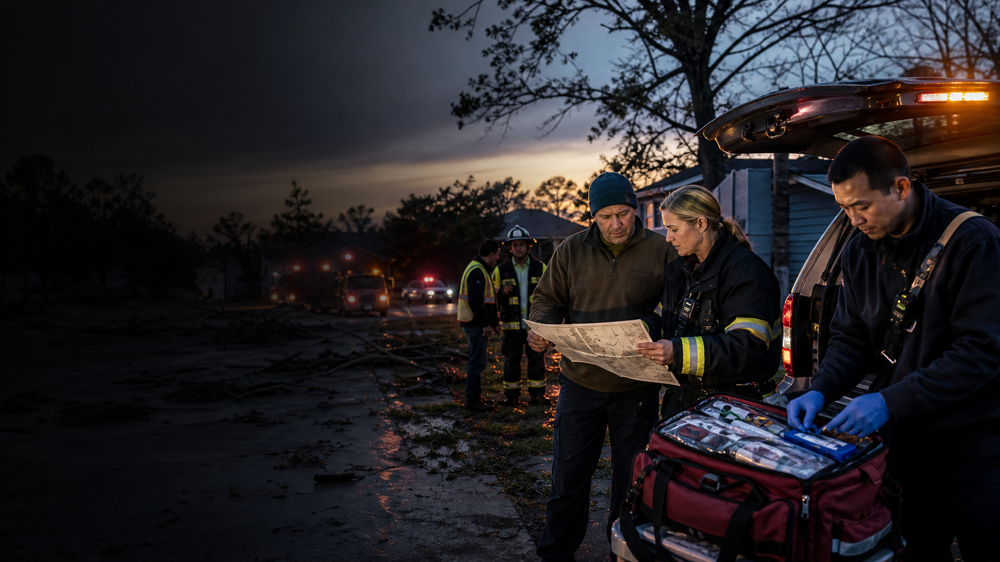
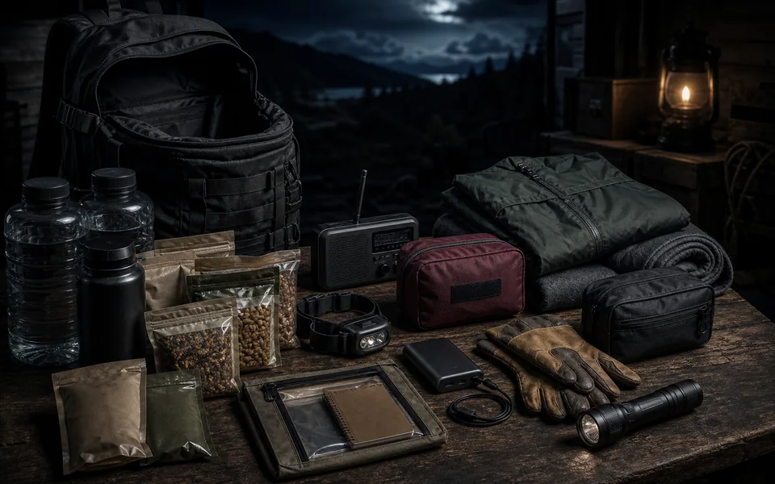
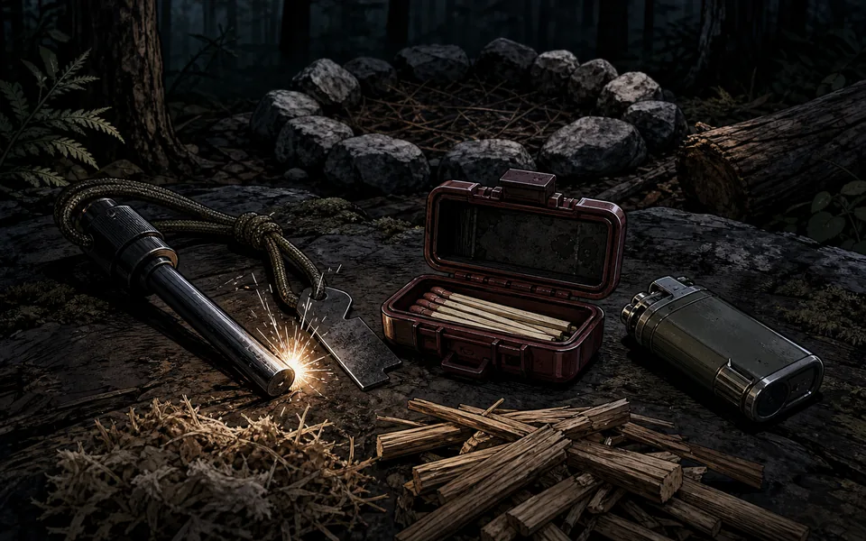
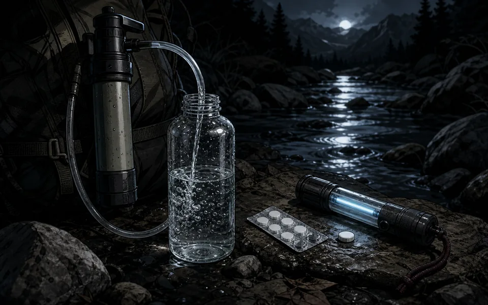
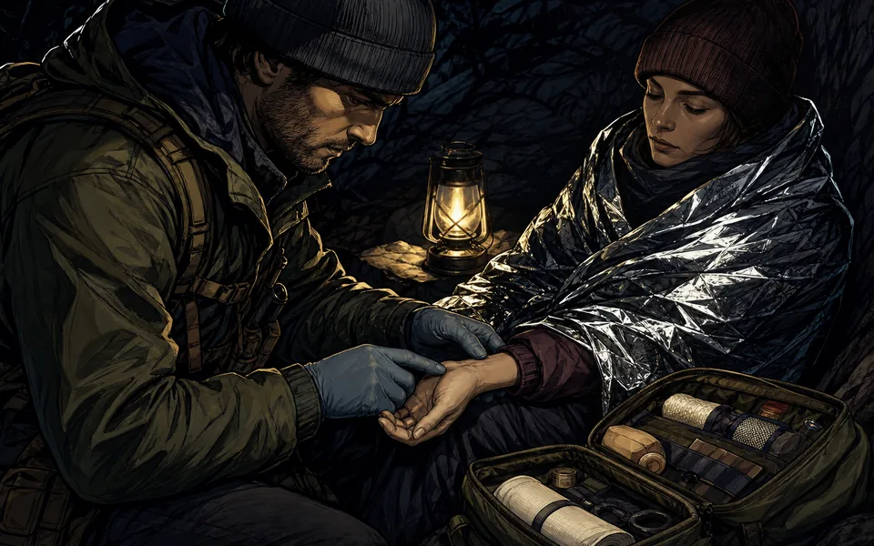
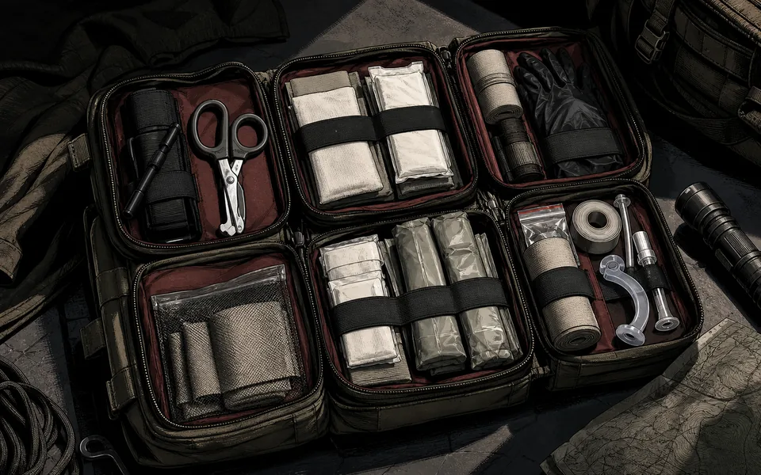
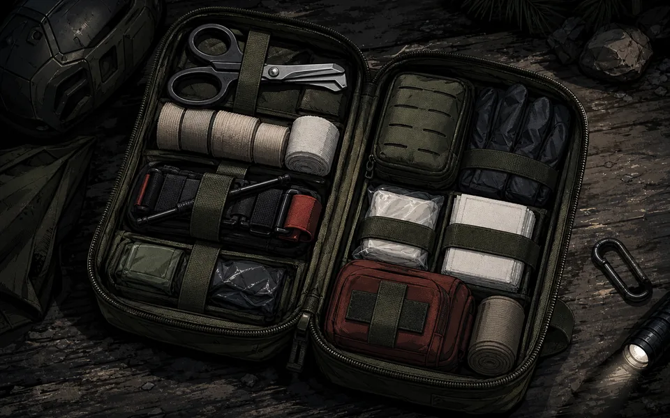
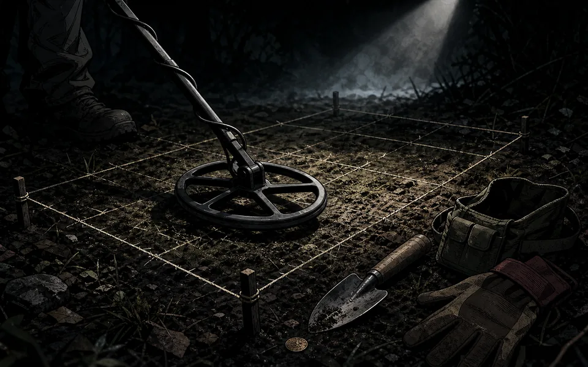

Build an Emergency Readiness System
Build a risk-first household system around alerts, evacuation decisions, supply layers, accessibility, wildfire safety, practice, and recovery.
Build Your Readiness System →Research-informed EMS, fire, rescue, wildfire, and readiness education with clear limits on scope and authority.
Choose a learning path below, then continue through recognized instruction, local protocols, medical direction, department procedures, and hands-on practice. These guides are educational and do not provide certification or operational authority.

Build a risk-first household system around alerts, evacuation decisions, supply layers, accessibility, wildfire safety, practice, and recovery.
Build Your Readiness System →
Plan a household-scaled home reserve, portable evacuation kit, and grab pouch—then use the interactive printable checklist.
Build Your Kit →
Prepare defensible space, recognize departure triggers, evacuate early, plan adaptive needs, and return safely.
Build Your Wildfire Plan →
Filters, chemical treatments, and UV—explained by biological mechanism. Includes a clarity vs. contact-time exercise.
Read Guide →
Recognize compensation before collapse. Hemorrhage control, heat preservation, and evacuation timing.
Read Guide →
Bleeding-control components, access order, packing layout, sourcing boundaries, and practice priorities.
Read Guide →
Planned topics include responder rehabilitation, heat stress, PPE and SCBA awareness, communications, lithium-ion incidents, and vehicle-extrication scene safety.
Contribute Qualified Feedback →
Find the project’s earlier travel, firecraft, adaptive mobility, field game, and responsible target-recovery material.
Browse the Archive →Qualified EMS, fire, rescue, emergency-management, occupational-health, and accessibility reviewers are invited to identify priorities and correct technical gaps.
Contribute Feedback →